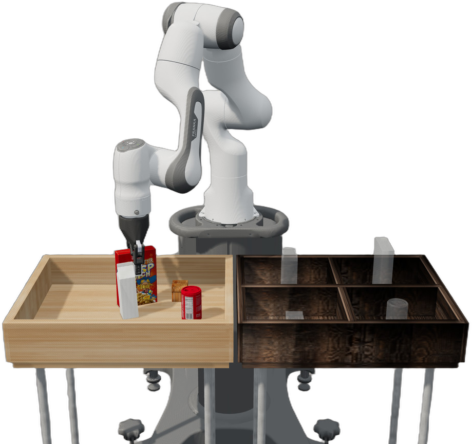

01 Robotics & simulation
A robot that
sees, picks
and sorts.
A vision-guided pick-and-place pipeline that finds grocery objects, estimates their pose and places each one in the correct bin.

RoboSuite · MuJoCo
Panda + Robotiq 85
SCROLL
Pipeline
Detect · Pose · Pick · Place